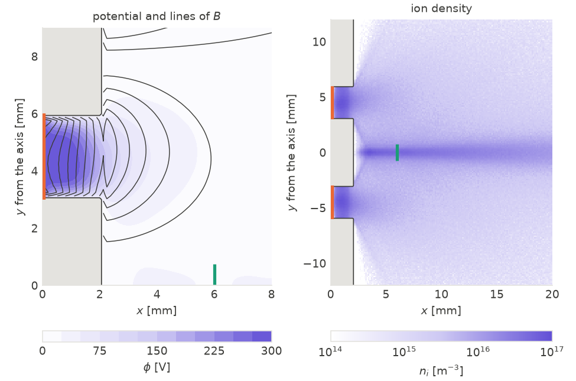
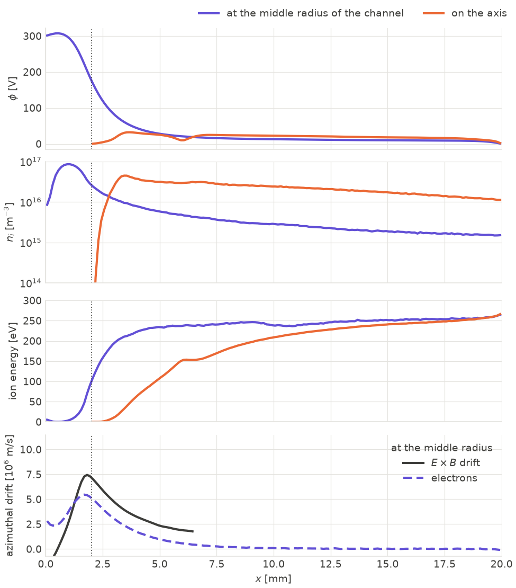
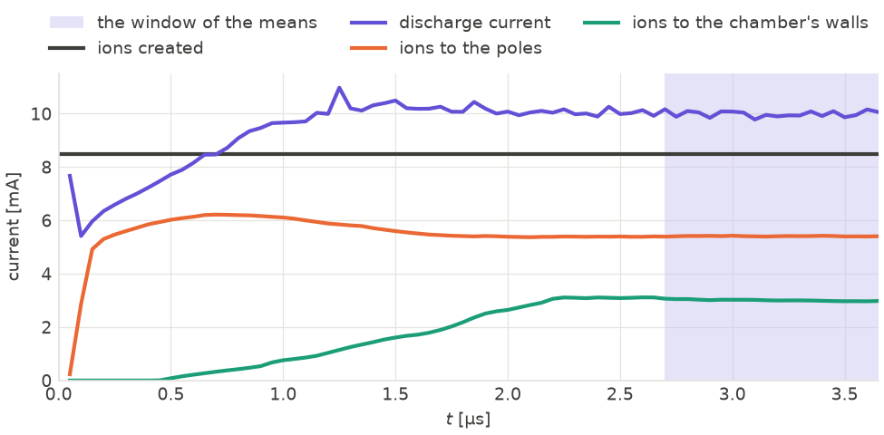

Hall thruster in 3-D#
A Hall thruster ionizes a gas in an annular channel and accelerates the ions with an axial electric field. A radial magnetic field holds the electrons back, so that the field can stand in the plasma: the electrons drift around the channel instead, in the E×B direction. This case is a small thruster of the anode-layer type (TAL), which has a short channel with metal walls. It is simulated in 3-D with its channel, a central cathode and the plume in a grounded vacuum chamber. The 2-D LANDMARK benchmark covers the axial and the azimuthal direction of such a discharge; this case adds the geometry, the curved magnetic field and the plume. It has no theory and no other code to compare with, so the results below describe what the run gives.
Setup#
The axis of the thruster is along \(x\) and passes through the middle of the \(y\)–\(z\) plane. Radii are measured from this axis.
Domain |
20 mm × 24 mm × 24 mm; all six sides are walls |
Grid |
160 × 192 × 192 cells of 0.125 mm |
Back wall, \(x = 0\) |
the anode at 300 V, a ring between the radii 3 and 6 mm; the rest of the wall is grounded |
Channel |
from the anode to the exit at \(x = 2\) mm, between the radii 3 and 6 mm |
Body |
the inner pole (radius below 3 mm), the outer pole (6 to 7 mm) and the mount (beyond 7 mm), all from \(x = 0\) to 2 mm. They are one grounded conductor, made of 316 boxes, so the walls of the channel are metal at 0 V. |
Magnetic field |
the field in the gap between the two pole tips, which cover \(x = 0.5\) to 2 mm. It is computed in |
Ionization |
no neutral gas and no collisions. Pairs of an electron (10 eV) and a Xe⁺ ion (0.5 eV) are created in the channel between \(x = 0.25\) and 1.75 mm, at a rate with a sine profile along \(x\). The source gives an ion current of \(100\ \mathrm{A/m^2}\) over the cross-section of the channel, 8.48 mA. |
Cathode |
a square of 1.5 mm on the axis at \(x = 6\) mm. Each step it emits as many electrons (5 eV) as the anode collected net. |
Chamber |
grounded walls at \(x = 20\) mm and at 12 mm from the axis; they absorb |
Particles |
none at the start; \(5\times10^{3}\) particles per macroparticle; about \(4.5\times10^{6}\) ions and \(3.7\times10^{6}\) electrons in the steady state. The ions are moved every 10th step. |
Time step |
\(10^{-11}\) s |
Run |
365 000 steps (3.65 µs), output every 5000 steps |
Field solver |
GMG3D, the 3-D multigrid; relative tolerance \(10^{-5}\) |
Build |
the default build (quadratic particle shape, single precision) |
Cost |
about 1 h 50 min on one NVIDIA A100 |
The thruster is scaled down in density. Its plasma is about ten times thinner than that of a real thruster, at most \(9\times10^{16}\ \mathrm{m^{-3}}\). The Debye length is then about ten times longer, and a cell of 0.125 mm resolves it (1.2 Debye lengths at \(10^{17}\ \mathrm{m^{-3}}\) and 20 eV).
Running#
python examples/thrusters/hall_thruster_3d/case.py runs/hall_thruster_3d
build/HEXAPIC runs/hall_thruster_3d/case.toml > runs/hall_thruster_3d/run.log
python examples/thrusters/hall_thruster_3d/analyze.py runs/hall_thruster_3d
case.py writes runs/hall_thruster_3d/case.toml. It needs numpy and scipy
to compute the magnetic field. analyze.py reads the series and the log of
the run, run.log, which has the currents of the walls and of the body. It
prints the numbers below and writes results.json and the three figures
into the run’s directory.
Option of |
|
|---|---|
|
the number of steps |
|
an output every |
|
write the frames that HEXAPIC / VIZ shows during the run |
Option of |
|
|---|---|
|
average the last |
|
the plane of the thrust and of the beam, in mm (default 15) |
|
the log of the run (default |
Results#
The discharge is steady from about 2 µs. All numbers below are means over the last 20 outputs, from 2.70 to 3.65 µs. Over this window the discharge current changes by 1.1 % and the number of ions by 0.8 %. Profiles “at the middle radius” are means around the axis at the radius 4.5 mm, and “on the axis” means within 0.6 mm of it.
The discharge#

Left: the potential and the lines of the magnetic field in the upper half of the plane through the axis, near the channel. Right: the ion density in the whole plane. The body is grey, the anode orange and the cathode green.
The plasma in the channel is at the potential of the anode, up to 307 V. The potential falls where the magnetic field is strong: at the middle radius it is 295 V at \(x = 1\) mm, 177 V at the exit, 82 V at 3 mm and 28 V at 5 mm. The axial field \(E_x\) peaks at \(1.47\times10^{5}\) V/m at 1.8 mm, just inside the exit. The electron temperature peaks at 29 eV at 1.3 mm, where the magnetic field has its peak.
In the crossed fields the electrons drift around the axis. At the exit their mean azimuthal velocity is \(5.1\times10^{6}\) m/s, which is 0.71 of the E×B drift of the mean fields, \(7.2\times10^{6}\) m/s.

Profiles along \(x\) at the middle radius of the channel and on the axis: the potential, the ion density, the energy of the ions’ mean axial velocity, \(\tfrac{1}{2} M v_x^2\), and the azimuthal drift of the electrons with the E×B drift. The dotted line is the exit of the channel. The E×B drift is drawn where \(B_r\) is above a tenth of its peak.
The plume#
The ions are not magnetized. They fall through the potential drop at the exit and reach 240 to 255 eV at 15 to 18 mm, which is 0.8 of the 300 V of the anode. Ions that leave the channel towards the axis cross there and form a central jet. Beyond 5 mm the ion density on the axis is 5.5 to 9.7 times the density at the middle radius.
The thrust is the momentum flux of the ions through a plane, the beam current \(I_b\) is their current through it, and the divergence is the rms angle of their mean velocity to the axis, weighted by their flux. The discharge current \(I_d\) is the current of the anode.
at \(x = 6\) mm |
at \(x = 15\) mm |
|
|---|---|---|
Thrust [µN] |
65 |
51 |
Beam current \(I_b\) [mA] |
2.82 |
2.03 |
\(I_b / I_d\) |
0.28 |
0.20 |
Mean energy of the beam [eV] |
187 |
231 |
Divergence [°] |
28 |
19 |
The values fall with the distance because the plume is wider than the chamber: 1.30 mA of ions reach its side walls. The divergence at 15 mm is that of the ions that are left.
The currents#

The discharge current, the ion current to the two poles and the ion current to the walls of the chamber over the run. The black line is the ion current that the source creates.
Current, mean over the window |
[mA] |
|---|---|
Discharge current \(I_d\) |
\(9.99 \pm 0.11\) |
Ions created by the source |
8.48 |
Ions to the inner pole |
1.95 |
Ions to the outer pole |
3.46 |
Ions to the anode |
0.10 |
Ions out of the channel |
2.97 |
Ions to the far wall of the chamber |
1.71 |
Ions to the side walls of the chamber |
1.30 |
Of the 8.48 mA of ions that the source creates, 5.41 mA are lost to the poles and 2.97 mA leave the channel. The loss is large because the walls of the channel are grounded metal 1.5 mm from a plasma at about 300 V: the ions that are born where \(E_x\) is still weak are pulled to the walls. The currents collected by all surfaces add up to 8.52 mA, 0.5 % more than the source creates, as the number of ions is still falling slowly.
Files#
|
the case as a PICMI script |
|
the case as |
|
the discharge, the plume and the currents, from a run and its log |
|
the figures above, as |
|
the origin of the model |
The script#
case.py
#!/usr/bin/env python3
"""hall_thruster_3d: a small Hall thruster in 3-D, its channel and its plume.
python case.py DIR # DIR/case.toml
python case.py DIR --run # and HEXAPIC on it (build/HEXAPIC; --hexapic: another), into DIR/output
python case.py # the case.toml beside this script
A thruster with anode layer (TAL): a short annular channel between two
magnetic poles, the anode at its bottom, the walls of the channel grounded
metal. The thruster's axis is along x, through the middle of the y-z plane.
x = 0 the back wall: the anode (300 V) at the bottom of the
channel, the grounded body over the rest of the wall
0 - 2 mm the channel, between the radii 3 and 6 mm: inside it the
inner pole, outside it the outer pole (6 - 7 mm) and the
mount (beyond 7 mm). Poles and mount are one grounded body
0.25-1.75 mm the ionisation: xenon ion-electron pairs created in the
ring at a rate with a sine profile along x, 100 A/m^2 of
ions over the channel's cross-section; no neutrals, no
collisions
0.5 - 2 mm the pole tips. B is the field of their gap, from the
magnetic scalar potential (see circuit()): 20 mT at the
channel's middle radius at its peak, at 1.4 mm
6 mm the cathode, a 1.5 mm square on the axis: it emits as many
electrons each step as the anode collected net
20 mm, +-12 mm the grounded walls of the vacuum chamber
The thruster is scaled: its plasma is about ten times thinner than a real
thruster's, so the Debye length, and with it the cell, is about ten times
larger. --steps and --every shorten the run and set its output; --live
writes the frames HEXAPIC / VIZ shows during the run. Needs numpy and scipy
(the magnetic field).
"""
import argparse
import math
from pathlib import Path
import numpy as np
import scipy.sparse as sps
import scipy.sparse.linalg as spl
from hexapic import picmi
ap = argparse.ArgumentParser(description="a Hall thruster in 3-D: case.toml")
ap.add_argument("dir", nargs="?", type=Path)
ap.add_argument("--steps", type=int, default=365000, help="3.65 us; the discharge is steady from about 2 us")
ap.add_argument("--every", type=int, default=5000, help="an output every this many steps")
ap.add_argument("--live", action="store_true")
ap.add_argument("--run", action="store_true")
ap.add_argument("--hexapic", type=Path, help="the binary --run runs (default build/HEXAPIC)")
args = ap.parse_args()
HERE = Path(__file__).resolve().parent
# the thruster [m]
R1, R2, LC = 3e-3, 6e-3, 2e-3 # the channel's radii and its depth (the anode to the exit)
R3 = 7e-3 # the outer pole's outer radius; beyond it the mount
U0 = 300.0 # the anode [V]
# the box: cubic cells, a multiple of 4 along each axis
DX, DT = 125e-6, 1e-11
LX, HALF = 20e-3, 12e-3 # x from 0 to LX; y and z from 0 to 2 HALF, the axis at y = z = HALF
# the plasma
JM = 100.0 # the ion current of the source over the channel's cross-section [A/m^2]
X1, X2 = 0.25e-3, 1.75e-3 # the source's range along x [m]
TE_SRC, TI_SRC, TE_CATHODE = 10.0, 0.5, 5.0 # the created electrons and ions, the cathode's electrons [eV]
WEIGHT = 5e3 # particles per macroparticle: about 40 per cell at 1e17 m^-3
X_CATHODE, A_CATHODE = 6e-3, 0.75e-3 # the cathode's plane, the half side of its square [m]
# the magnetic circuit
T_TIP = 1.5e-3 # the pole tips' length, back from the exit [m]
X_PLATE, R_PLATE = -1e-3, R3 + 3e-3 # the back plate's face behind the anode, the outer tip's outer radius [m]
BMAX = 20e-3 # the peak of the radial field at the channel's middle radius [T]
c = picmi.constants
nx, ny = round(LX / DX), round(2 * HALF / DX)
rate = JM / (c.q_e * (X2 - X1)) # the source's mean rate over its ring [m^-3 s^-1]
r_mid = 0.5 * (R1 + R2)
def circuit(h=DX, x_far=40e-3, r_far=30e-3):
"""B_x and B_r on an (x, r) grid of step h, from the magnetic scalar potential psi (H = -grad psi in the gap).
psi solves Laplace's equation in axisymmetric coordinates with psi = +1 on the inner pole's tip (r <= R1) and
-1 on the outer one's (R2 <= r <= R_PLATE), both over LC - T_TIP <= x <= LC, and psi = 0 on the back plate
(x <= X_PLATE) and far away. The field is scaled to BMAX at the channel's middle radius."""
xs = X_PLATE - 1e-3 + h * np.arange(round((x_far - X_PLATE + 1e-3) / h) + 1)
rs = h * np.arange(round(r_far / h) + 1)
X, R = np.meshgrid(xs, rs, indexing="ij")
tip = (X >= LC - T_TIP - 1e-12) & (X <= LC + 1e-12)
inner, outer = tip & (R <= R1), tip & (R >= R2) & (R <= R_PLATE)
fix = (X <= X_PLATE) | inner | outer
val = np.where(inner, 1.0, np.where(outer, -1.0, 0.0))
fix[-1, :] = True
fix[:, -1] = True
free = ~fix
idx = -np.ones(X.shape, int)
idx[free] = np.arange(free.sum())
I, J = np.nonzero(free)
k = idx[I, J]
j = J.astype(float)
# the stencil: x +-1 (1, 1); r +1 (r_{j+1/2} / r_j, on the axis 4: the symmetry); r -1 (r_{j-1/2} / r_j)
rows, cols, vals, b, diag = [], [], [], np.zeros(len(k)), np.zeros(len(k))
for di, dj, w in ((1, 0, np.ones(len(k))), (-1, 0, np.ones(len(k))),
(0, 1, np.where(J == 0, 4.0, (j + 0.5) / np.maximum(j, 1.0))),
(0, -1, np.where(J == 0, 0.0, (j - 0.5) / np.maximum(j, 1.0)))):
use = w > 0
a, cc, w, kk = I[use] + di, J[use] + dj, w[use], k[use]
f = fix[a, cc]
np.add.at(b, kk[f], w[f] * val[a[f], cc[f]])
rows.append(kk[~f])
cols.append(idx[a[~f], cc[~f]])
vals.append(-w[~f])
np.add.at(diag, kk, w)
A = sps.csr_matrix((np.concatenate(vals + [diag]), (np.concatenate(rows + [k]), np.concatenate(cols + [k]))),
shape=(len(k), len(k)))
psi = val.copy()
psi[free] = spl.spsolve(A, b)
bx, br = -np.gradient(psi, h, axis=0), -np.gradient(psi, h, axis=1)
s = BMAX / np.abs(br[xs >= 0, round(r_mid / h)]).max()
return xs, rs, bx * s, br * s
# the map HEXAPIC takes: every second node along x over the box, and along r out to the box's corners
xs_m, rs_m, bx_m, br_m = circuit()
pos = np.arange(round(LX / (2 * DX)) + 1) * 2 * DX
rad = np.arange(math.ceil(HALF * math.sqrt(2) / (2 * DX)) + 1) * 2 * DX
ii, jj = np.searchsorted(xs_m, pos - 1e-12), np.searchsorted(rs_m, rad - 1e-12)
b_axial, b_radial = bx_m[np.ix_(ii, jj)], br_m[np.ix_(ii, jj)].copy()
b_radial[:, 0] = 0.0 # no radial field on the axis
grid = picmi.Cartesian3DGrid(number_of_cells=[nx, ny, ny], lower_bound=[0.0, 0.0, 0.0],
upper_bound=[LX, 2 * HALF, 2 * HALF],
lower_boundary_conditions=["dirichlet"] * 3, upper_boundary_conditions=["dirichlet"] * 3)
sim = picmi.Simulation(
solver=picmi.ElectrostaticSolver(grid=grid), time_step_size=DT, max_steps=args.steps,
hexapic_title="hall_thruster_3d",
hexapic_description="A small Hall thruster with anode layer in 3-D: the annular channel, the field of the "
"magnetic poles, a central cathode and the plume in a grounded chamber.",
hexapic_output={"phase_space": True, "final_particles": False} | ({"live": True} if args.live else {}),
hexapic_tuning={"store_slack": 1.0}, # the plasma fills a small part of the box: more room in its bins
hexapic_magnetic_field={"type": "axisymmetric", "axis": "x", "center": [HALF, HALF], "position": pos.tolist(),
"radii": rad.tolist(), "axial": b_axial.tolist(), "radial": b_radial.tolist()})
sim.add_diagnostic(picmi.FieldDiagnostic(grid=grid, period=args.every))
electrons = picmi.Species(particle_type="electron", name="electrons")
ions = picmi.Species(particle_type="Xe", charge_state=1, name="ions", hexapic_subcycle=10)
for sp in (electrons, ions):
sim.add_species(sp, None)
sim.add_boundary(picmi.Boundary(type="biased", location="x_lo", voltage=U0))
for loc in ("x_hi", "y_lo", "y_hi", "z_lo", "z_hi"):
sim.add_boundary(picmi.Boundary(type="grounded", location=loc))
# the ionisation: pairs in the ring, an electron and an ion at one position
ring = {"center": [HALF, HALF], "inner": R1, "outer": R2}
region = {"lower": [X1, 0.0, 0.0], "upper": [X2, 2 * HALF, 2 * HALF]}
sim.add_source(picmi.Source(species=electrons, rate=rate, region=region, annulus=ring, shape="sine", weight=WEIGHT,
temperature_eV=TE_SRC))
sim.add_source(picmi.Source(species=ions, rate=rate, region=region, annulus=ring, shape="sine", weight=WEIGHT,
temperature_eV=TI_SRC, same_positions_as="electrons"))
# the cathode: the charge the anode collected net, emitted again as electrons from a square on the axis
sim.add_source(picmi.Source(species=electrons, balance_wall="x_lo", weight=WEIGHT, temperature_eV=TE_CATHODE,
region={"lower": [X_CATHODE, HALF - A_CATHODE, HALF - A_CATHODE],
"upper": [X_CATHODE, HALF + A_CATHODE, HALF + A_CATHODE]}))
def boxes(inside):
"""The node boxes (k1, k2, l1, l2) that cover the nodes of the y-z plane where inside(y, z) holds, y and z from
the axis: the runs of such nodes along z in each row of y, and equal runs of neighbouring rows merged."""
rows = []
for k in range(ny + 1):
runs, l = [], 0
while l <= ny:
if inside(k * DX - HALF, l * DX - HALF):
l0 = l
while l <= ny and inside(k * DX - HALF, l * DX - HALF):
l += 1
runs.append((l0, l - 1))
else:
l += 1
rows.append(runs)
out, started = [], {}
for k in range(ny + 2):
runs = set(rows[k]) if k <= ny else set()
for run in list(started):
if run not in runs:
out.append((started.pop(run), k - 1, *run))
for run in runs:
started.setdefault(run, k)
return out
# the body: grounded conductor boxes from the back wall to the exit. Their nodes on x = 0 hold the wall at 0 V
# there, so the anode is the bottom of the channel alone
body = (("inner pole", lambda y, z: y * y + z * z <= R1 * R1),
("outer pole", lambda y, z: R2 * R2 <= y * y + z * z < R3 * R3),
("mount", lambda y, z: y * y + z * z >= R3 * R3))
for name, inside in body:
for k1, k2, l1, l2 in boxes(inside):
sim.add_region(picmi.Region(type="conductor", nodes={"from": [0, k1, l1], "to": [round(LC / DX), k2, l2]},
voltage=0.0, name=name))
if args.run and args.dir is None:
ap.error("--run needs a directory for the run")
print(sim.write_input_file((args.dir or HERE) / "case.toml"))
if args.run:
sim.run(**({} if args.hexapic is None else {"hexapic": args.hexapic.resolve()}))
References#
The case has no theory and no data from other codes to compare with.
Two parts of its model are those of the 2-D benchmark of Charoy and others [2019], which the LANDMARK example reproduces: the ionization is an imposed source of electron–ion pairs with a sine profile along the axis, and the cathode emits in each step the charge that the anode collected. The geometry, the magnetic field and the scaling of the thruster are this case’s own.